K7 — item renders, round 1 concepts
One concept per item (2cr each, retakes cost pennies — ask for any re-roll with direction).
Picks become: world props via the meshy 3D lift pipeline (like the karts) and/or
HUD icons replacing the current lucide line-art. Item BEHAVIOR does not change — art only.
Thrown / world props (3D lift candidates)
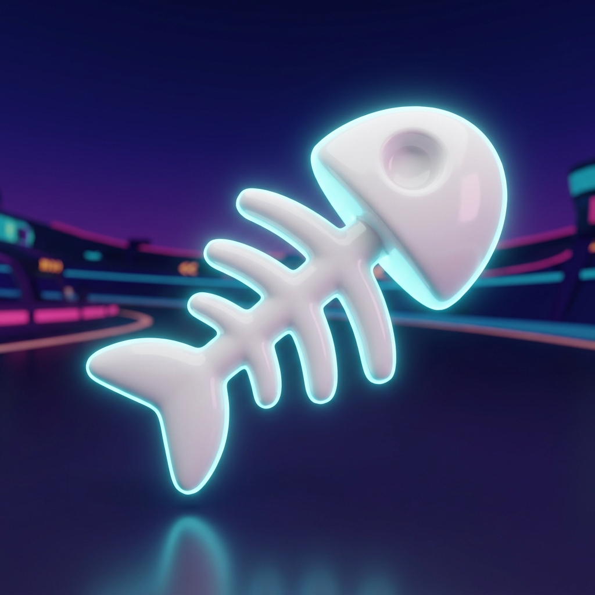
Fish Bone
Current: procedural white bone mesh. Concept: glossy toy skeleton, cyan neon rim — matches the game's palette 1:1.
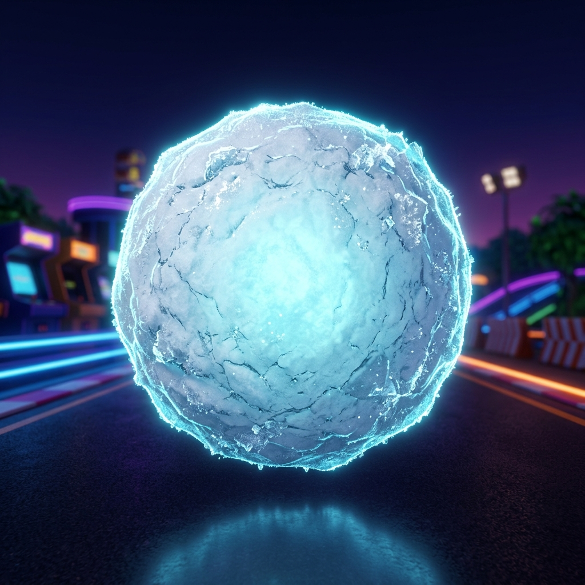
Snowball
Current: white sphere + glow sprite. Concept: packed-snow texture with icy core glow. (Also lifoladen's throw skin.)
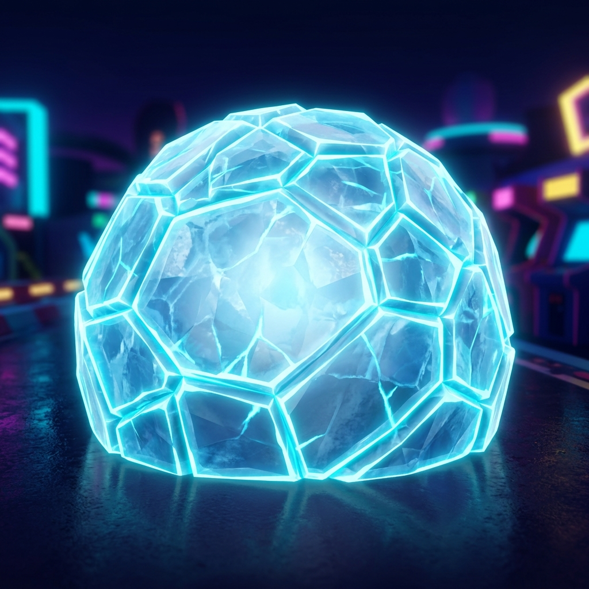
Ice Shield
Current: faceted icosahedron dome (procedural). Concept: crystalline dome with glowing facet seams — a texture bake for the existing dome OR a full lift.
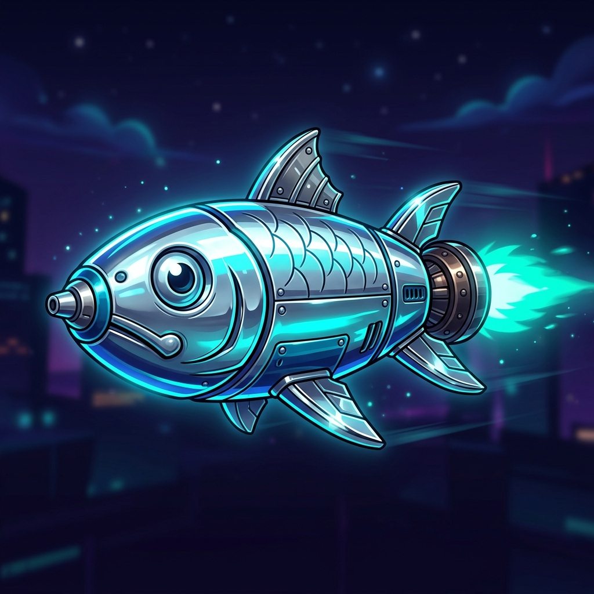
Rocket Sardine
Current: silver fish body + flame cone.
Came out illustration-style (outlined, has an eye) vs the 3D-render look of the others — great as an ICON; say re-roll if you want the 3D-toy-render style for the world prop.
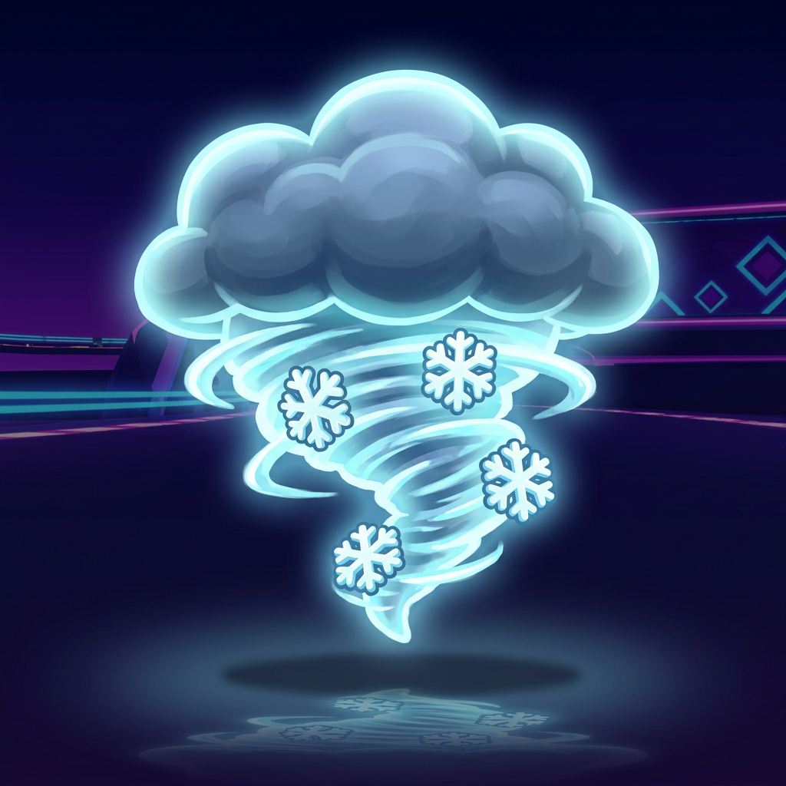
Blizzard Cloud
Current: translucent dome + swirl. Concept: storm cloud with a snowflake vortex — the vortex would be the in-world read (cloud above, swirl at track level).
Illustration-lean; reads perfectly as an icon. World version would be cloud mesh + existing dome VFX.
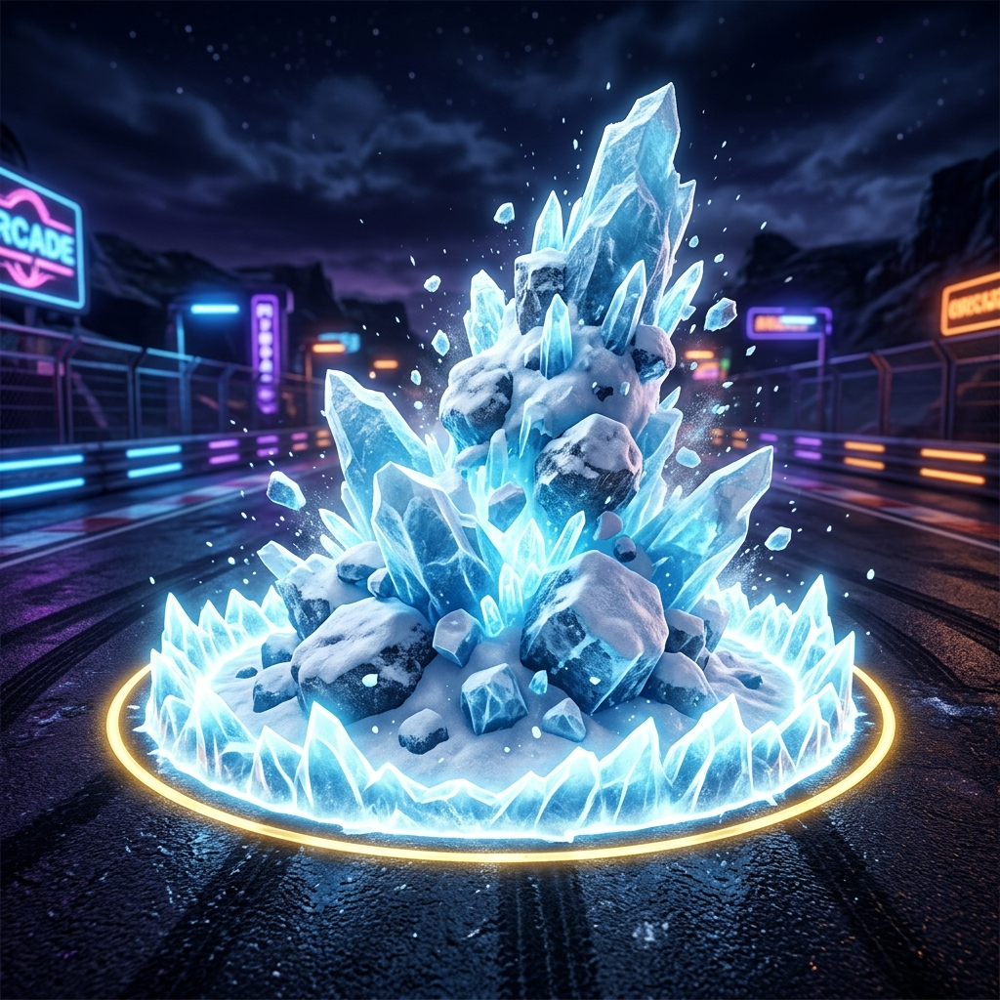
Avalanche Marker
Current: flat warning ring + glow. Concept: erupting ice-boulder mound inside a gold-rimmed ice ring — the ultimate finally LOOKS like an ultimate.
Background sign has stray text ("RCADE") — background is discarded at lift time; prop itself is clean.
Track + icon-only
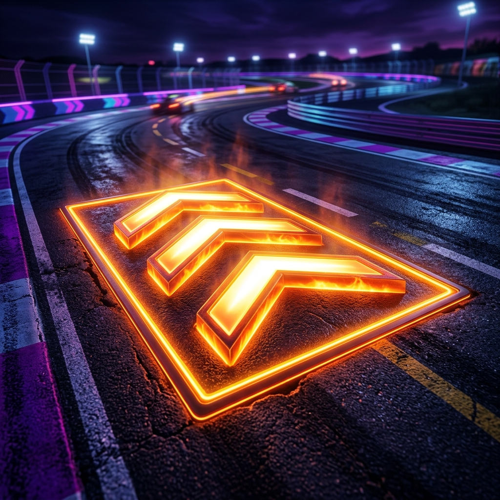
Boost Pad
Current: hot chevrons V1 (shipped). Concept: beveled 3D chevrons w/ white-hot cores + edge trim ring. This is an ART DIRECTION reference — the in-game pad stays authored geometry; I'd rebuild the chevron profile + emissive ramp to match.
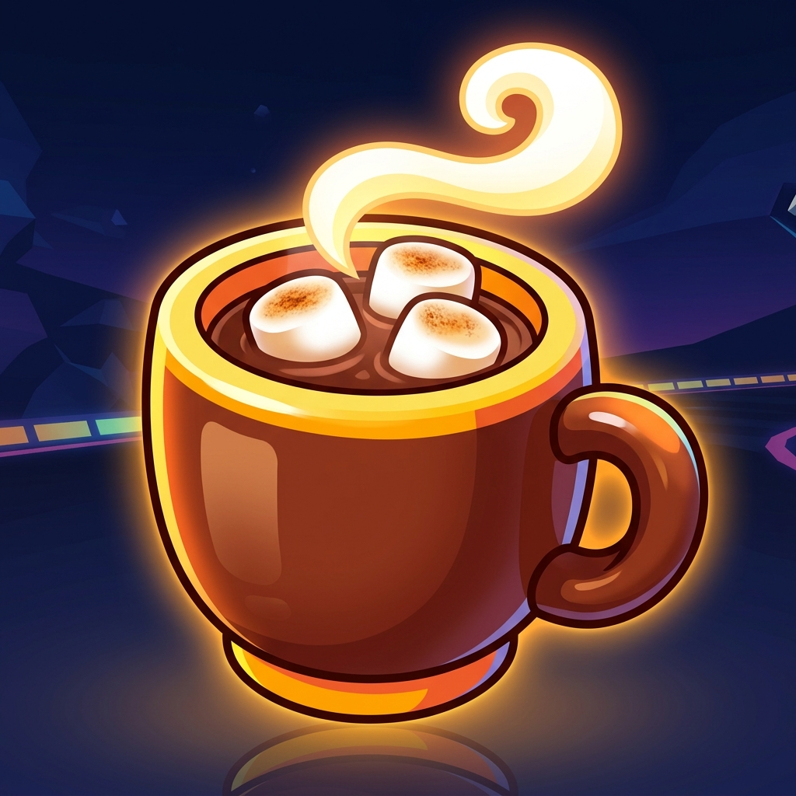
Hot Cocoa
Icon-only item (instant boost, no world prop) — and it happened to roll a perfect sticker-style ICON. Ready to land as HUD/guide art as-is.
Round 2 — LIFTED world props (in the game, awaiting your deploy word)
Your concept approvals went through the 3D pipeline. These are the actual game meshes
(dieted to budget, 128px textures — they render ~40px tall at race speed). Sardine + blizzard were
re-rolled to 3D-toy style first (sardine-rocket-v2.png / blizzard-cloud-v2.png) — both landed clean.
Fish bone's lift reads best in profile (it spins on the road, so every angle shows). The snowball lift is
BENCHED for bundle budget (the procedural white sphere stays; its render lives here if you want it later).
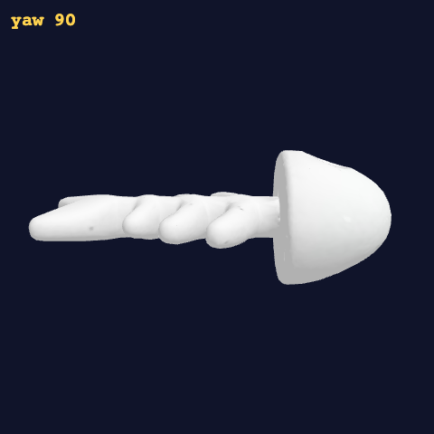
Fish Bone — lifted
4.6k tris, 65 KiB. Spins in place on the road like before.
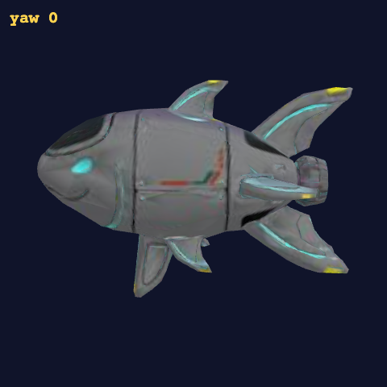
Rocket Sardine — lifted
6.6k tris, 140 KiB. Barrel-rolls along its flight path.
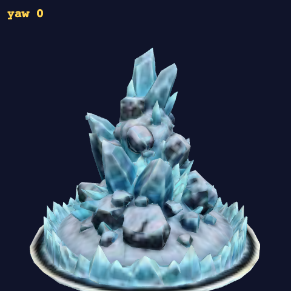
Avalanche Mound — lifted
7.7k tris, 163 KiB. Erupts inside the existing warning ring; pulse/burst unchanged.
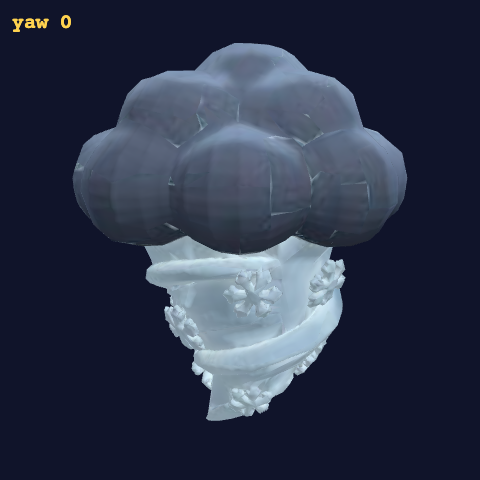
Blizzard Cloud — lifted
7.9k tris, 163 KiB. Crowns the fog dome and spins with it.
THE CHIP QUESTION (W7.2 — you asked me to ask with icons in hand):
the held-item display today is the icon ON the smash button (phone) / a small corner chip (desktop).
With this icon set, the options are:
A. Keep the layout, swap in these rendered icons (zero layout risk, big readability win)
B. A — plus the icon pops oversized for ~0.5s when you pick up a new item (MK-style "you got X" moment)
C. Dedicated item slot ABOVE the smash button showing the icon in a rounded card (more presence, costs thumb-zone space)
Say A, B, or C (or describe your own). Also say which concepts are PICKED /
need a re-roll — one word each is fine, e.g. "all picked, re-roll sardine".